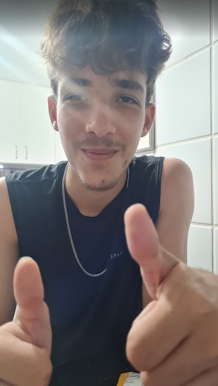
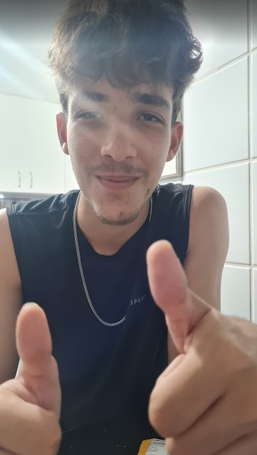
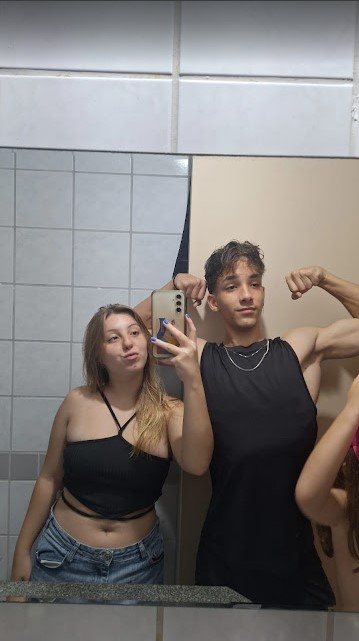
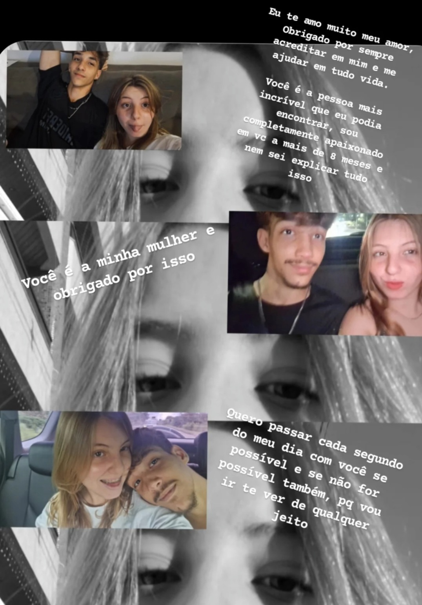
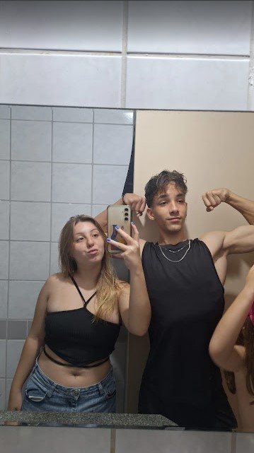
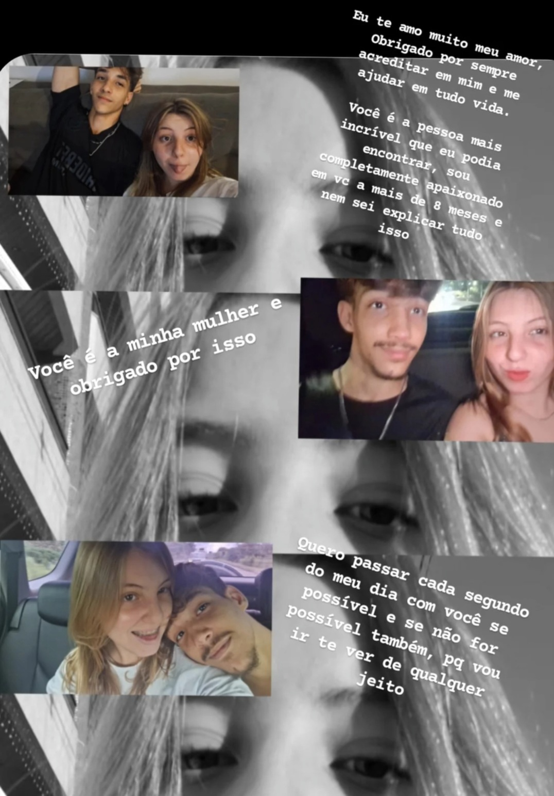

quanto tempo estamos juntos?
tempo??💖Fotos com você princesa
Mesmo excluindo quase todas ainda restam algumas.


 



 





Tudo que tenho para falar
toda nossa historia desde 1 açai.
Desde o primeiro dia que a gente se viu, eu já senti algo diferente vindo de você, e sei que você também percebeu isso aquele dia que comemos açaÃ, jogamos Uno, conversamos na varanda e vimos filme de terror no quarto, em colchões diferentes, há 4 anos atrás.
Bem, 19 de janeiro de 2021 a gente conversou no WhatsApp a primeira vez, amor! Kkkkkkkk, que conversa constrangedora, mas foi nossa primeira interação! Kkk.
Desde essa época, a gente tinha encontros esporádicos e eu estava "namorando" a Hannah, então não dava muita bola para você, mas você desde essa época já dava em cima de mim, né, safada Kkkkkk.
Bem, depois de muito e muito tempo — 3 anos — a gente volta a cruzar caminhos aleatoriamente no aniversário da Sofia, onde a gente só se deu "Oi" e você foi resolver com outro menino! Kkkkkkkkkkkkk.
A gente só não esperava que no final do mesmo ano a gente iria começar a conversar por culpa de um pequeno serzinho que nunca largou do meu pé nesse meio-tempo de 3 anos... ai, ai viu, Catarina! Kkkkkkkkkkkkkk.
Bem, eu só pretendia ir para sua casa brincar com a Cat esse dia, só não esperava que a irmã dela estava tão mais linda assim em 4 meses que eu vi da última vez. Bem, você já até tinha curtido uns stories, respondido umas palhaçadas, mas nunca dei bola. Mas depois daquele dia, eu tive que voltar no domingo para continuar brincando com a Catarina e conversando com a irmã gostosa dela! Kkkkkkkkkkkkkkkkkk. Aquele domingo foi muito bom: a gente brincou com a Cat um tempo, ficamos deitados no sofá vendo TV e mexendo no celular, eu sempre tentando chegar perto de você. Quem diria que o We e sua mãe iriam sair à noite e a gente fosse ficar sozinho! Não lembro de quem foi a ideia de comer hambúrguer, mas foi muito boa. Você botar HIMYM justamente no dia que eu me apaixonei de verdade por você chega a ser irônico! Kkkkkkk. Eu pretendia fazer igual o Ted fez com a Robin e só dar um aperto de mão longo em você, mas tu fez algo a mais, algo que me deixou preso nessa por dias e dias, algo que me faz sentir um negócio imenso por você até hoje. AAA, aquele beijo! Meu Deus, aquele beijo!
Olha, não demorou muito para a gente sair para o shopping na mesma semana. A saudade de você era muito grande (ainda é enquanto escrevo isso, KKKK). Eu sei que eu fiquei o dia inteiro pensando com que roupa eu ia para te encontrar, o que a gente ia fazer, o que irÃamos comer, se eu ia andar de mãos dadas com você, se eu ia beijar você de novo. Eu estava muito ansioso para isso, só pensava em você! Todas essas memórias que eu tenho me alegram muito ao escrever isso. Te amo, princesa.
Eu lembro cada momento com você. Aquela vez no parque foi tudo tão mágico! Ir nos brinquedos com você... a adrenalina de estar no brinquedo só não era maior que a adrenalina de estar ao seu lado a todo momento! Ir na roda-gigante e se pegar muito pela primeira vez lá em cima foi maravilhoso. Aproveitar os brinquedos enquanto admiro suas reações era muito bom. Sair do parque para fumar um maço quase inteiro de palheiro enquanto a gente conversava sobre o dia foi muito bom. Dali para a frente não tinha mais para onde fugir, eu já era todo seu.
Novembro, a gente já estava há 1 mês de aventuras. Miguel sofreu esse mês, tadinho, viu coisa demais. Te apresentei pessoalmente meu melhor amigo da forma mais meme possÃvel: bebendo caipirinha e fumando um verde. Churros + biscoito + macarrão foi bom demais! Kkkk. Bem, e pensar que isso já faz quase 1 ano. Nem parece! Com você, tudo passou tão rápido...
Simplesmente o dia que a gente foi mais irresponsável e idiota possÃvel, mas também um dia que a gente sempre lembra porque foi muito engraçado e bom! Kkkkkk. Aquele maldito brigadeiro me fez viver uns 10 dias em 5 horas! Kkkkkkkkkkkkkkkkkkkkkk. Bem, mês do meu aniversário, eu nunca tinha aproveitado tanto assim essa data sem ser ao seu lado. Te amo muito por estar comigo todo esse tempo.
Logo no começo de dezembro, eu tinha perguntado para você qual era sua flor favorita e aproveitei que tinha comprado umas camisas de time e decidi dar, junto com essa camisa ridÃcula do SPFC, o melhor presente que eu já pude te dar: girassóis para combinar com a flor que você é. Te dei a flor loira mais linda que existe. Já falei que amo ter uma foto com minha esposa na formatura do Ensino Médio. Nunca vou me arrepender dessa escolha, isso só mostra o quão importante você é para mim e o quanto você se dedica em estar presente nas minhas conquistas.
Natal da vovó: você conheceu todos os parentes malucos que eu tenho (ou quase todos) e amou a sua tia favorita que até hoje torce para a gente voltar (mal sabe ela, kkkkk).
E olha só, decidimos imitar os mineiros e passar o réveillon em Guarapari! Kkkkkkkkkkkk. Simplesmente os carros cheios até a boca de comida, roupa e tudo que tinha direito. (Foi a primeira vez de muitas que fiz merda no carro do meu pai.) Nunca vou esquecer como o caminho inteiro de ida você, sua mãe e o We foram me aconselhando e acalmando até chegar lá. E olha só, agora foi a minha vez de conhecer sua famÃlia doida! Kkkkkkkkkkkk. 4 dias que me diverti muito lá com todos vocês.
Janeiro continua a vibe de conhecer famÃlia e a gente fez uma das piores/melhores escolhas possÃveis: IR ACAMPAR! Puta merda, foi tão bom lá com você! Só porque depois desse dia você entendeu o motivo de Sofia não ir nos encontros de famÃlia onde tem esse povinho. Último mês das férias antes da sofrência voltar de novo: a gente se via todo dia, saÃa para casa de Dalto, shopping com os meninos, até casa de um povinho meio estranho a gente foi (Scardua).
Volta tudo a sua rotina, só que agora eu estudo à noite, mas a gente ainda se via à tarde, já que éramos 2 vagabundinhos que se amam muito para ficar muito tempo sem se ver. Teve dia que você foi até no médico comigo! Kkkkkkkk. Finais de semana comendo besteira toda vez e FUMANDO MUITOOOOO tabaco.
Março, a gente só conseguia se ver final de semana, mas a gente aproveitava muito bem. Se não era de conchinha grudado, respirando o mesmo ar, a gente saÃa para qualquer lugar, seja Triângulo, Lama, Garden, casa do Dalto. Todo final de semana tinha resenha garantida. Se não tinha, a gente arrumava um filme para ver no shopping, que provavelmente é o lugar que a gente mais frequentou juntos. Todo mês era umas 3x lá! Kkkkkkkkkkkkkkkkkkkkkk.
Olha só o mês do seu aniversário, benzinho! 18 anos na cara, já era adulta e continua falando que é adolescente! Kkkkkkkkkkkkkkk. Bem, hoje em dia não mudou muito, então nem vou falar nada! Kkkkk. Queria que você tivesse feito algo mais marcante para eu poder escrever aqui. É o seu aniversário de 18 anos. Espero que no de 19 faça algo para a próxima retrospectiva! Jkjkkkkkkjk. Sua viagem para São Paulo foi nesse mês também. Isso significa que foi a segunda vez que eu te dei flores. Dormi na sua casa ansioso para te entregar aquelas flores no aeroporto, mas só consegui entregar no carro! Kkkkk. Bem, nem as fotos você tem mais, está tudo bem. Da próxima vez eu dou de novo (lá ele).
A única coisa que eu lembro de maio é de estar muito bêbado no dia do Oásis, ter ido ver filme no cinema com você e pegar meu pôster de Star Wars que eu fiquei com hiperfoco por 3 meses do nada! Kkkkkkkkkk. Mas a gente sempre se esforça para se ver, seja você indo lá na Faesa à noite, vindo aqui em casa à tarde e atrasando para o curso ou a gente se vendo todo final de semana para ficar em casa e brincar com a Cat ou ver filme ou série, qualquer coisa. Ver The Boys foi um ótimo passatempo esse mês! Kkkkkkkkkkk.
8 meses juntos. A gente já tinha perdido a conta várias vezes no meio do caminho, mas agora é impossÃvel esquecer (1 ano). Ir para a praia com o meme esse mês foi bem divertido, chegar em casa e pintar um Bobbie Goods. 12 de junho significa que, olha só, Dia dos Namorados namorando! Perdi mo tempo fazendo o outro site e fiquei muito orgulhoso de ter ele até hoje. Mas esse mês não foi só coisa boa, olha só, nosso primeiro término.
Mês seguinte, dia 5, a gente já estava de volta. Mas olha só, férias! Meus pais viajaram, eu tinha comprado muita maconha e o meme também. A gente ficou 1 semana chapado aqui em casa só brisando e queimando neurônio. Porém, a gente não fez muito mais esse mês porque ainda estávamos meio brigados.
Agosto: acabou de vez isso que a gente tinha e ficamos 2 meses com uma sensação ruim na barriga, a cabeça a um milhão pensando um monte de merda, o peito acelerado toda hora, buscando aquilo que a gente tinha antes. A promessa era após o ENEM, a gente não conseguiu cumprir isso até hoje! Kkkkkkkkkk. Inventamos 1 milhão de desculpas para continuar se vendo, a gente toda vez fazia alguma coisa que machucava ambos.
Olha só, se Agosto foi difÃcil, imagina Setembro, que não podia nem se matar! Kkkkkkkkkkkk. Aqui desandou de vez. Tudo parecia dar errado na vida, já estava sem esperança para nada. O mês foi um terror e Halloween é só em Outubro. Toda conversa com você doÃa, eu não cansava de falar e fazer merda, você também não fazia muito diferente. A gente só machucou o casal lindo que tinha no começo desse texto gigante. Eu lá no fundo ainda tinha esperança, mas ela estava cada vez mais fraca. Eu já estava por desistir depois de você me contar aquilo. Ainda bem que você não faz só merda, mas também faz coisa boa: "OI, vamo pra selva!" Kkkkkkkkkkk, ops!
Outubro: inacreditável que, mesmo depois de 2 meses de puro terror nas nossas cabeças, de discussões sem propósitos, você ainda me perdoou e decidiu dar outra chance. Não foi um perdão unilateral, eu também deixei tudo que aconteceu para trás e posso dizer: você é a pessoa que mais me faz feliz na vida! Eu te amo muito, ISABELA CARDOSO LEMOS! Eu quero e faço você sentir aquela sensação do parque de diversões ainda? Eu faço você se alegrar todos os dias ainda? Eu te amo muito e quero mais 2, 3, 4, 5, 6, 7, 8, 9, 10... 30, 40, 50 anos ao seu lado! Você é incrÃvel, meu amor!